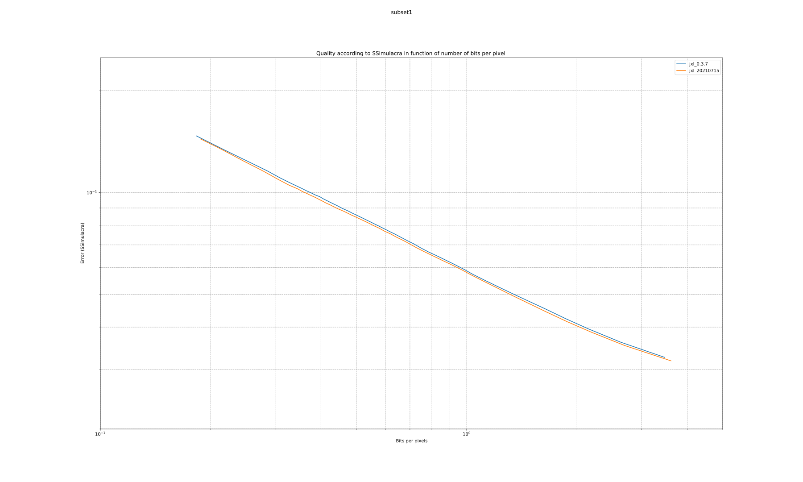
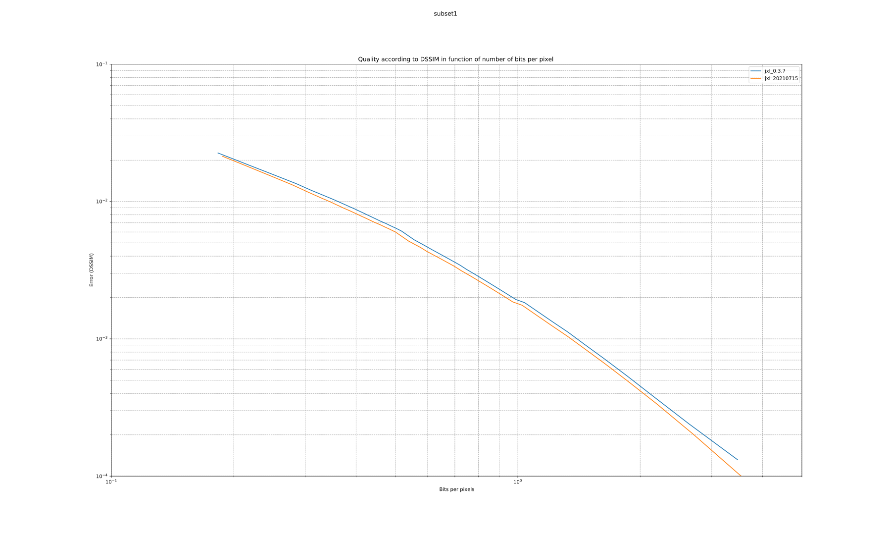
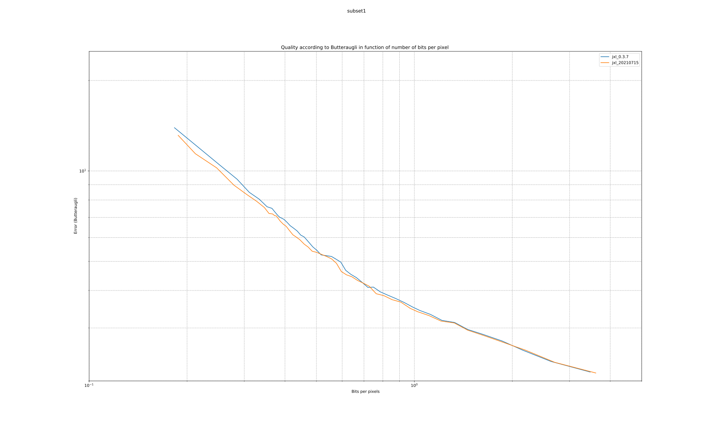
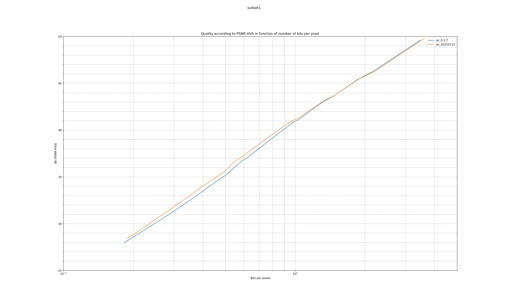
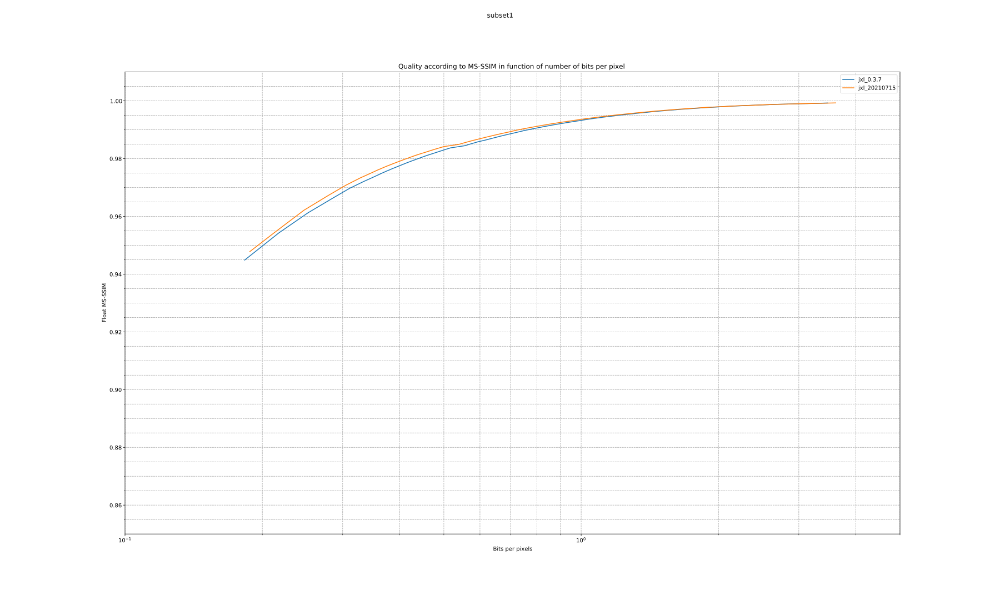
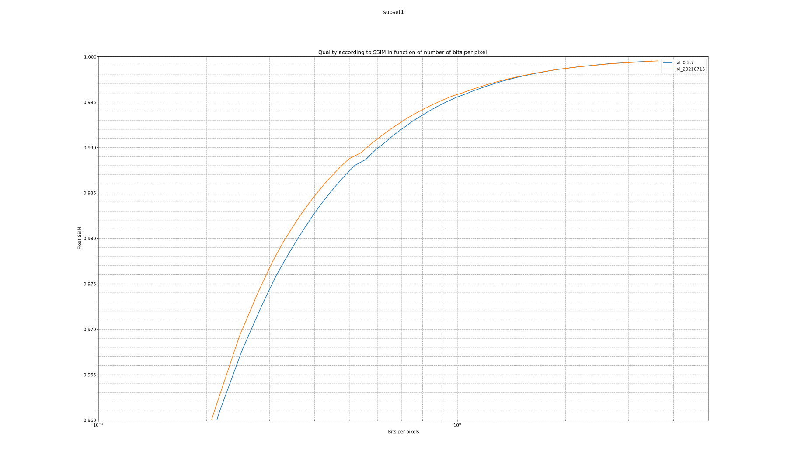
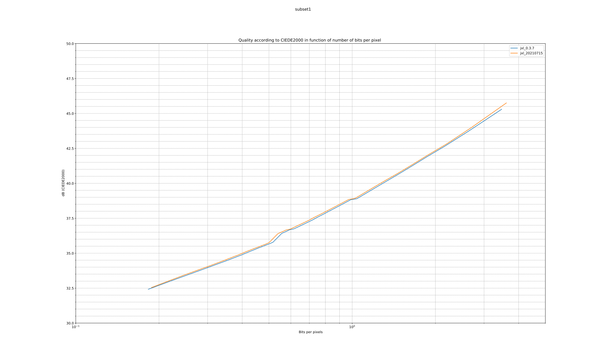
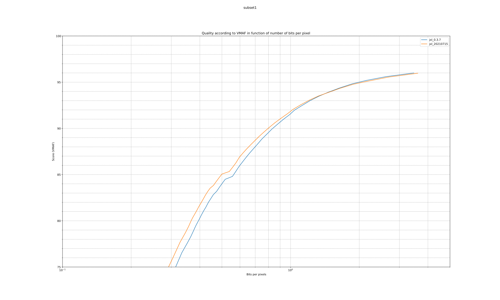

Comparison between JPEG XL version 0.3.7 and JPEG XL 20210715
Bits per pixel at equivalent quality according to SSimulacra

Bits per pixel at equivalent quality according to DSSIM

Bits per pixel at equivalent quality according to Butteraugli

Bits per pixel at equivalent quality according to PSNR-HVS

Bits per pixel at equivalent quality according to MSSSIM

Bits per pixel at equivalent quality according to SSIM

Bits per pixel at equivalent quality according to CIEDE2000

Bits per pixel at equivalent quality according to VMAF
Please note that VMAF is more suitable as a video codec comparison tool, not an image one.
